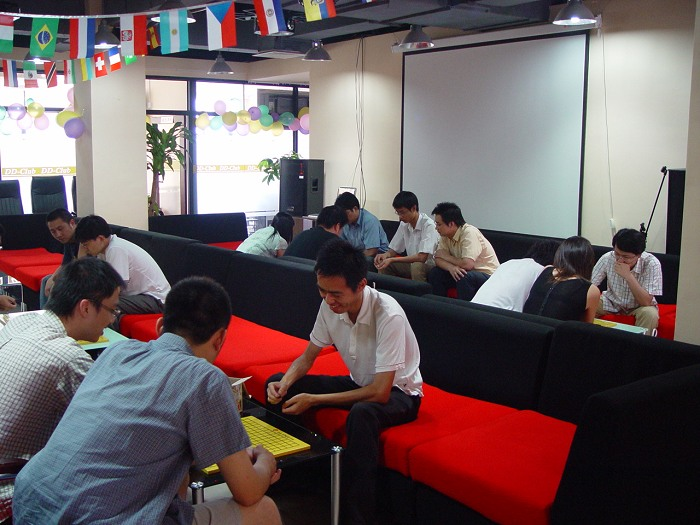
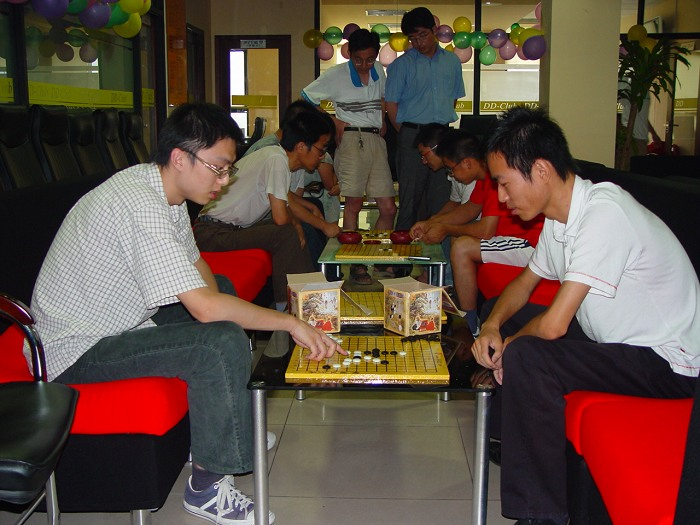
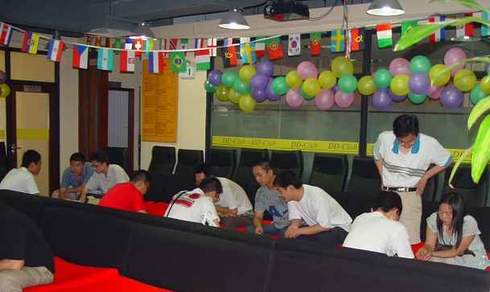
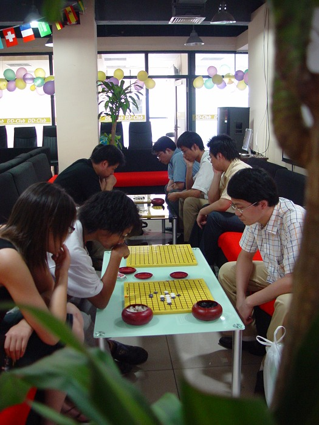
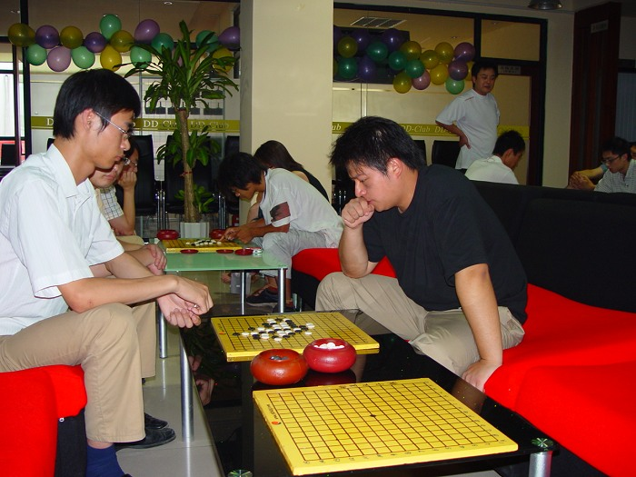
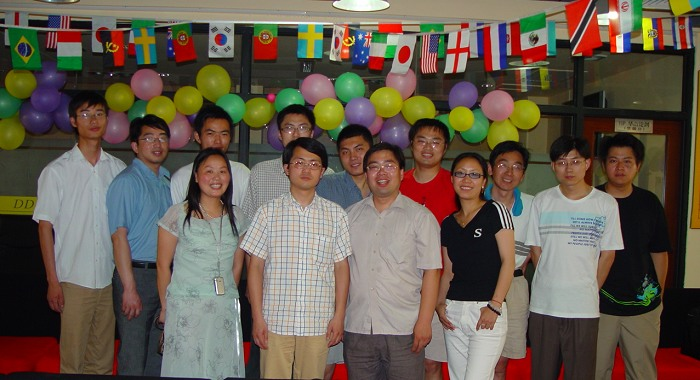
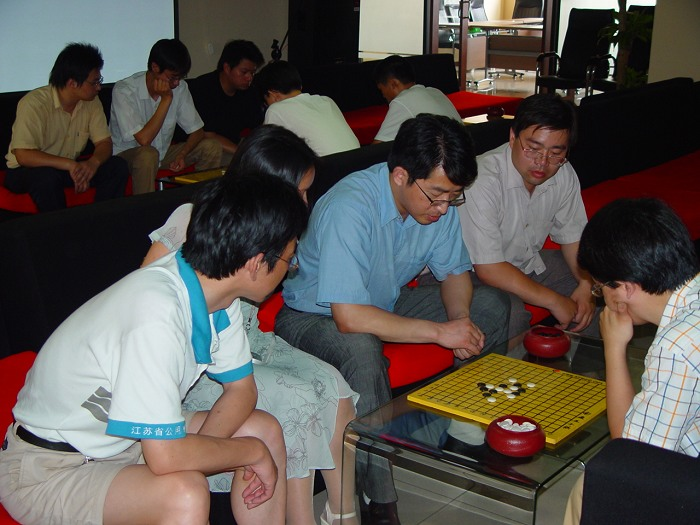
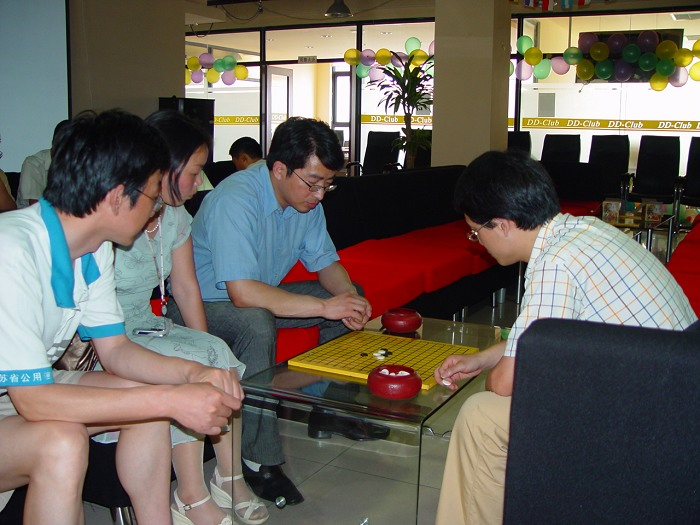
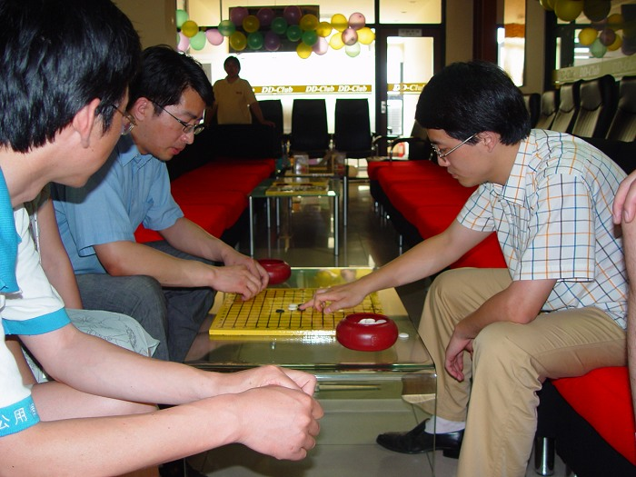
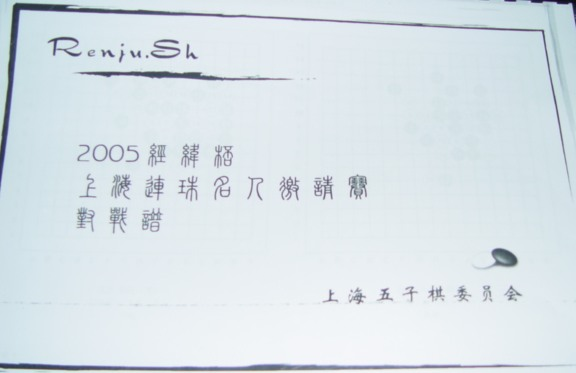

南通五子棋今日〔6月24日下午1：30〕举办了第五次联谊活动，此次活动在南通市鼎典益智推理俱乐部内进行，共有近20名爱好者参加，因天气的缘故〔狂风暴雨〕路途较远的几个朋友未能赶到，甚为遗憾。
上海七段顾炜老师从头至尾参加了此次活动，并赠送南通五子棋社“2005经纬杯上海连珠名人邀请赛对战谱〔全谱〕”。顾老师对南通五子棋的现状给予了充分的肯定，并对南通五子棋下一步的发展提出了宝贵的意见。
会后，南通五子棋核心组成员就南通五子棋下一步的活动开展交换了意见。
南通五子棋历次活动：
第一次活动报道：ShowPost.asp?ThreadID=13
第二次活动报道：ShowPost.asp?ThreadID=208
第三次活动报道：ShowPost.asp?ThreadID=331
第四次活动报道：ShowPost.asp?ThreadID=442



活动场景

顾炜老师和南通五子棋爱好者对弈中

飞翔vs徐兄

与顾炜老师合影



顾炜老师与痞子蔡切磋中

顾炜老师赠送的“2005经纬杯上海连珠名人邀请赛对战谱〔全谱〕”
引用：欢迎行云流水老师常来指导哟。
原文由 行云流水 发表于 2006-6-26 17:16:50 :
南通连珠活动基础好，很多方面值得上海学习。双方交流，我们也获益匪浅。
我继续来考古，看到顾炜老师了吗？